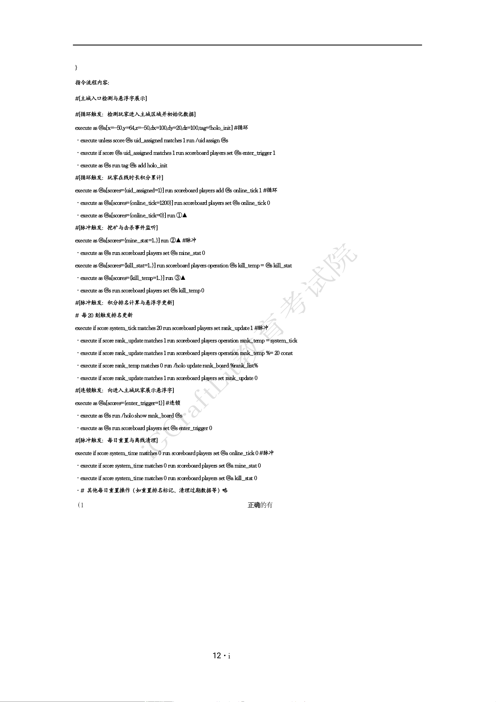

}
指令流程内容：
#[主城入口检测与悬浮字展示]
#[循环触发：检测玩家进入主城区域并初始化数据]
execute as @a[x=-50,y=64,z=-50,dx=100,dy=20,dz=100,tag=!holo_init] #循环
·execute unless score@s uid_assigned matches 1 run /uidassign @s
·execute if score @s uid_assigned matches 1 run scoreboard players set @s enter_trigger 1
·execute as @s run tag @s add holo_init
#[循环触发：玩家在线时长积分累计]
execute as @a[scores={uid_assigned=1}] run scoreboard players add @s online_tick 1 #循环
·execute as @a[scores={online_tick=1200}] run scoreboard players set @s online_tick 0
·execute as @a[scores={online_tick=0}] run ①▲
#[脉冲触发：挖矿与击杀事件监听]
execute as @a[scores={mine_stat=1..}] run ②▲ #脉冲
·execute as @s run scoreboard players set @s mine_stat 0
execute as @a[scores={kill_stat=1..}] run scoreboard players operation @s kill_temp= @s kill_stat
·execute as @a[scores={kill_temp=1..}] run ③▲
·execute as @s run scoreboard players set @s kill_temp0
#[脉冲触发：积分排名计算与悬浮字更新]
# 每20 刻触发排名更新
execute if score system_tick matches 20run scoreboard players set rank_update 1 #脉冲
·execute if score rank_update matches 1 run scoreboard players operation rank_temp = system_tick
·execute if score rank_update matches 1 run scoreboard players operation rank_temp %= 20 const
·execute if score rank_temp matches 0 run /holo updaterank_board %rank_list%
·execute if score rank_update matches 1 run scoreboard players set rank_update 0
#[连锁触发：向进入主城玩家展示悬浮字]
execute as @a[scores={enter_trigger=1}] #连锁
·execute as @s run /holoshow rank_board @s
·execute as @s run scoreboard players set @s enter_trigger 0
#[脉冲触发：每日重置与离线清理]
execute if score system_time matches 0 run scoreboardplayers set @a online_tick 0 #脉冲
·execute if score system_time matches 0 run scoreboardplayers set @a mine_stat 0
·execute if score system_time matches 0 run scoreboardplayers set @a kill_stat 0
·# 其他每日重置操作（如重置排名标记、清理过期数据等）略
（1）（3 分）下列关于该系统 Java 实现与指令流程联动的分析，正确的有▲ （多选)
A. assignUid()方法中String.format("%06d", random.nextInt(1000000))生成的UID 范围为 000000~999999，理论容量为 100 万个，满足80
人服务器需求；指令流程中execute unless score @s uid_assigned matches 1 run /uid assign @s 执行后，若/uid assign 命令因网络延迟未及
时完成，玩家需等待下一个循环刻（20 刻后）才能重新检测并触发展示
B. getRankList()方法使用stream().sorted((e1,e2)->e2.getValue()-e1.getValue())按积分降序排列，时间复杂度为O(n log n)，在80 人规模下
约需512 次比较操作，性能可接受；但/holo update rank_board %rank_list%中%rank_list%每次更新时若积分相同玩家排名互换，悬浮
字内容会频繁刷新导致视觉闪烁
C. 指令流程中 execute if score system_tick matches 20 run scoreboard players set rank_update 1 仅在system_tick 恰好等于 20 时触发排名更
新，rank_update 被置1 后立即通过后续指令置 0；若 system_tick 从 20 跳变至 21（因服务器卡顿导致跳刻），则本次排名更新将被